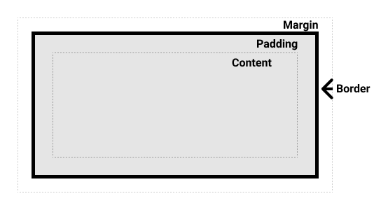

在线学习网站#
视频教程#
电子书#
Head First HTML与CSS (提取码: eplw)
HTML/CSS训练#
代码编辑#
代码编辑器可以使用Visual Studio Code,可以安装插件以支持各种编程语言(js、python、R等)语法高亮以及可以安装remote-ssh以进行ssh远程连接等。
使用css3实现加载中动态样式#
优先级#
- 一个元素选择器不是很具体 — 会选择页面上该类型的所有元素 — 所以它的优先级就会低一些。
- 一个类选择器稍微具体点 — 它会选择该页面中有特定 class 属性值的元素 — 所以它的优先级就要高一点。
This is my heading.
.main-heading {
color: red;
}
h1 {
color: blue;
}
<h1 class="main-heading">This is my heading.</h1>
选择器#
全局选择器#
全局选择器，是由一个星号（*）代指的，它选中了文档中的所有内容（或者是父元素中的所有内容，比如，它紧随在其他元素以及邻代运算符之后的时候）。
* {
margin: 0;
}
Note
使用全局选择器，让选择器更易读. article :first-child 与 article *:first-child 相同, 表示选中任何article元素的第一子元素, article:first-child表示选择了作为其他元素的第一子元素的article元素。
属性选择器#
| 选择器 | 示例 | 具体元素 | 描述 |
|---|---|---|---|
[attr] |
a[title] | <a title> | 匹配带有一个名为attr的属性的元素——方括号里的值。 |
[attr=value] |
a[href="https://example.com"] | <a href="https://example.com"> | 匹配带有一个名为attr的属性的元素，其值正为value——引号中的字符串。 |
[attr~=value] |
p[class~="special"] | <p class=" … special … "> | 匹配带有一个名为attr的属性的元素，其值正为value，或者匹配带有一个attr属性的元素，其值有一个或者更多，至少有一个和value匹配。 注意，在一列中的好几个值，是用空格隔开的。 |
[attr|=value] |
div[lang|="zh"] | <div lang="zh-…"> | 匹配带有一个名为attr的属性的元素，其值可正为value，或者开始为value，后面紧随着一个连字符。 |
[attr^=value] |
li[class^="box-"] | <li class="box-…"> | 匹配带有一个名为attr的属性的元素，其值开头为value子字符串。 |
[attr$=value] |
li[class$="-box"] | <li class="…-box"> | 匹配带有一个名为attr的属性的元素，其值结尾为value子字符串。 |
[attr*=value] |
li[class*="box"] | <li class="…box…"> | 匹配带有一个名为attr的属性的元素，其值的字符串中的任何地方，至少出现了一次value子字符串。 |
大小写不敏感#
- Item 1
- Item 2
- Item 3
li[class^="a"] {
background-color: yellow;
}
li[class^="a" i] {
color: red;
}
<ul>
<li class="a">Item 1</li>
<li class="A">Item 2</li>
<li class="Ab">Item 3</li>
</ul>
伪类和伪元素#
article p:first-child::first-line表示选择一个<article>元素里面的第一个<p>元素的第一行。
其中，伪类为单冒号，伪元素为双冒号。
Note
::before和::after通过使用 CSS 将内容插入到文档中。
Content in the box in my HTML page.
.box::after {
content: " ➥"
}
<p class="box">Content in the box in my HTML page.</p>
关系选择器#
- 后代选择器
.box p - 子代关系选择器
article > p - 邻接兄弟
p + img - 通用兄弟(选中一个元素的兄弟元素，即使它们不直接相邻)
p ~ img
盒模型#
块级盒子和内联盒子#
- 一个被定义成块级的（block）盒子会表现出以下行为
- 盒子会在内联的方向上扩展并占据父容器在该方向上的所有可用空间，在绝大数情况下意味着盒子会和父容器一样宽
- 每个盒子都会换行
- width 和 height 属性可以发挥作用
- 内边距（padding）, 外边距（margin）和 边框（border）会将其他元素从当前盒子周围“推开”
- 一个盒子对外显示为 inline，那么他的行为如下
- 盒子不会产生换行。
- width 和 height 属性将不起作用。
- 垂直方向的内边距、外边距以及边框会被应用但是不会把其他处于 inline 状态的盒子推开。
- 水平方向的内边距、外边距以及边框会被应用且会把其他处于 inline 状态的盒子推开。
内部和外部显示类型#
display: flex 外部显示类型是 block，但是内部显示类型修改为 flex
display: inline-flex 外部显示类型是 inline，但是内部显示类型修改为 flex
替代盒模型#

1. 标准盒模型
在标准模型中，如果你给盒设置 width 和 height，实际设置的是 content box。 padding 和 border 再加上设置的宽高一起决定整个盒子的大小。
2. 替代（IE）盒模型 使用
box-sizing: border-box来实现，替代模型中所有宽度都是可见宽度，内容宽度是该宽度减去边框和填充部分。
Note
下方示例可以看到，上面的box实际宽度为390（300 + 40 * 2 + 5 * 2），下面的box宽度为300
.box {
border: 5px solid rebeccapurple;
background-color: lightgray;
padding: 40px;
margin: 40px;
width: 300px;
height: 150px;
}
.alternate {
box-sizing: border-box;
}
<div class="box">I use the standard box model.</div>
<div class="box alternate">I use the alternate box model.</div>
外边距折叠#
顶部段落的页 margin-bottom为 50px，第二段的margin-top 为 30px，框之间的实际外边距是 50px，而不是两个外边距的总和。
I am paragraph one.
I am paragraph two.
.one {
margin-bottom: 50px;
}
.two {
margin-top: 30px;
}
<div class="container">
<p class="one">I am paragraph one.</p>
<p class="two">I am paragraph two.</p>
</div>
display: inline-block#
- 设置width 和height 属性会生效。
- padding, margin, 以及border 会推开其他元素。
.links-list a {
display: inline-block;
background-color: rgb(179,57,81);
color: #fff;
text-decoration: none;
padding: 1em 2em;
}
.links-list a:hover {
background-color: rgb(66, 28, 40);
color: #fff;
}
<nav>
<ul class="links-list">
<li><a href="">Link one</a></li>
<li><a href="">Link two</a></li>
<li><a href="">Link three</a></li>
</ul>
</nav>
渐变背景#
调整图片大小#
max-width: 100%,允许图片尺寸上小于但不大于盒子。- 使用
object-fit后替换元素可以以多种方式被调整到合乎盒子的大小。
样式化表格#
table-layout: fixed;, 根据列标题的宽度来规定列的宽度。border-collapse: collapse;, 让边框合为一条。
CSS排版#
正常布局流#
在没有改变默认布局规则情况下的页面元素布局方式。
弹性盒子display: flex;#
例子#
Sample flexbox example
First article
p1
Second article
p2
Third article
p3
p4
Fourth article
p5
Fifth article
p6
Six article
p7
p8
Seventh article
p9
p10
html:
<header>
<h1>Sample flexbox example</h1>
</header>
<section>
<article>
<h2>First article</h2>
<p>p1</p>
</article>
<article>
<h2>Second article</h2>
<p>p2</p>
</article>
<article>
<h2>Third article</h2>
<p>p3</p>
<p>p4</p>
</article>
<article>
<h2>Fourth article</h2>
<p>p5</p>
</article>
<article>
<h2>Fifth article</h2>
<p>p6</p>
</article>
<article>
<h2>Six article</h2>
<p>p7</p>
<p>p8</p>
</article>
<article>
<h2>Seventh article</h2>
<p>p9</p>
<p>p10</p>
</article>
</section>
section{
display: flex;
flex-wrap: wrap;/* 溢出的元素将被移到下一行 */
}
article {
flex: 200px; /* 每个元素的宽度至少是 200px */
}
属性#
Note
可使用F12开发者工具在上述例子上更改css属性
flex: 1 200px;: 每个 flex 项将首先给出 200px 的可用空间，然后，剩余的可用空间将根据分配的比例共享justify-content: space-around;: justify-content控制 flex 项在主轴上的位置align-items: center;: align-items控制交叉轴上的位置order:- 所有 flex 项默认的 order 值是 0。
- order 值大的 flex 项比 order 值小的在显示顺序中更靠后。
- 可以为负数。
网格布局display: grid;#
例子#
<div class="container">
<div class="first-div">One</div>
<div>Two</div>
<div>Three</div>
<div>Four</div>
<div>Five</div>
<div>Six</div>
<div>Seven</div>
</div>
.container {
display: grid;
grid-template-columns: repeat(auto-fill, minmax(200px, 1fr));
grid-gap: 20px;
grid-auto-rows: minmax(100px, auto);
}
.first-div{
grid-column: 1/3;
grid-row: 1/3;
}
属性#
grid-template-columns: repeat(2, 2fr 1fr), 表示2fr 1fr 2fr 1fr- 显式网格是使用
grid-template-columns和grid-template-rows创建的，隐式网格是为了放显式网格放不下的元素，浏览器根据已经定义的显式网格自动生成的网格部分，可以根据grid-auto-rows和grid-auto-columns来手动设置隐式网格的大小。 minmax(100px, auto), 尺寸至少为 100 像素，并且如果内容尺寸大于 100 像素则会根据内容自动调整。grid-column和grid-row，指定从那条线开始到哪条线结束。grid-template-areas:.container { display: grid; grid-template-areas: "header header" "sidebar content" "footer footer"; grid-template-columns: 1fr 3fr; grid-gap: 20px; } header { grid-area: header; } article { grid-area: content; } aside { grid-area: sidebar; } footer { grid-area: footer; }
浮动#
浮动元素会脱离正常的文档布局流，并吸附到其父容器的左边。在正常布局中位于该浮动元素之下的内容，此时会围绕着浮动元素，填满其右侧的空间。
This is my very important paragraph. I am a distinguished gentleman of such renown that my paragraph needs to be styled in a manner befitting my majesty. Bow before my splendour, dear students, and go forth and learn CSS!
<p>This is my very important paragraph.
I am a distinguished gentleman of such renown that my paragraph
needs to be styled in a manner befitting my majesty. Bow before
my splendour, dear students, and go forth and learn CSS!</p>
p {
width: 400px;
margin: 0 auto;
}
p::first-line {
text-transform: uppercase;
}
p::first-letter {
font-size: 3em;
border: 1px solid black;
background: red;
float: left;
padding: 2px;
margin-right: 4px;
}
定位position#
相对定位position: relative;#
例子:
Basic document flow
I am a basic block level element. My adjacent block level elements sit on new lines below me.
By default we span 100% of the width of our parent element, and we are as tall as our child content. Our total width and height is our content + padding + border width/height.
We are separated by our margins. Because of margin collapsing, we are separated by the width of one of our margins, not both.
inline elements like this one and this one sit on the same line as one another, and adjacent text nodes, if there is space on the same line. Overflowing inline elements will wrap onto a new line if possible (like this one containing text), or just go on to a new line if not, much like this image will do: 
第二段设置为position: relative;，添加top: 30px;left: 30px;
绝对定位position: absolute;#
例子:
Basic document flow
I am a basic block level element. My adjacent block level elements sit on new lines below me.
By default we span 100% of the width of our parent element, and we are as tall as our child content. Our total width and height is our content + padding + border width/height.
We are separated by our margins. Because of margin collapsing, we are separated by the width of one of our margins, not both.
inline elements like this one and this one sit on the same line as one another, and adjacent text nodes, if there is space on the same line. Overflowing inline elements will wrap onto a new line if possible (like this one containing text), or just go on to a new line if not, much like this image will do:
第二段设置为position: absolute;, 父元素设置为position: relative;, 添加top: 30px;left: 30px;
固定定位position: fixed;#
与绝对定位的工作方式完全相同，只有一个主要区别：绝对定位固定元素是相对于 <html> 元素或其最近的定位祖先，而固定定位固定元素则是相对于浏览器视口本身。
查看例子
粘性定位position: sticky;#
是相对位置和固定位置的混合体，它允许被定位的元素表现得像相对定位一样，直到它滚动到某个阈值点（例如，从视口顶部起 10 像素）为止，此后它就变得固定了。
查看例子
多列布局#
column-count: 3; 将创建指定数量的列
column-width: 200px; 将按照指定的宽度尽可能多的创建列, 任何剩余的空间之后会被现有的列平分。这意味着可能无法期望得到指定的宽度，除非容器的宽度刚好可以被你指定的宽度除尽。
column-gap: 20px; 改变列间间隙。
column-rule: 4px dotted rgb(79, 185, 227); 在列间加入一条分割线。
break-inside: avoid; 避免列与内容折断。
媒体查询#
@media media-type and (media-feature-rule) {
/* CSS rules go here */
}
媒体类型:
allprintscreenspeech
媒体特征规则:
- 宽和高:
min-width,max-width,width - 朝向:
orientation竖放(portrait),横放(landscape) - 使用指点设备:
hover: hover触摸屏和键盘导航没法实现悬浮，用户不能悬浮的话，可以默认显示一些交互功能
/* body 的文字只会在视口至少为 400 像素宽，且设备横放时变为蓝色 */
@media screen and (min-width: 400px) and (orientation: landscape) {
body {
color: blue;
}
}
/* 文本会在视口至少为 400 像素宽的时候或者设备处于横放状态的时候变为蓝色 */
@media screen and (min-width: 400px), screen and (orientation: landscape) {
body {
color: blue;
}
}
/* 文本只会在朝向为竖着的时候变成蓝色 */
@media not all and (orientation: landscape) {
body {
color: blue;
}
}